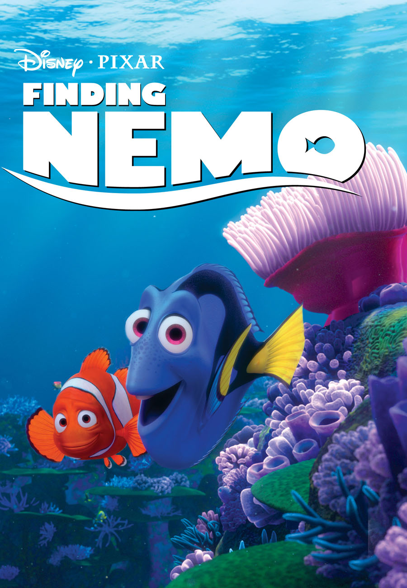
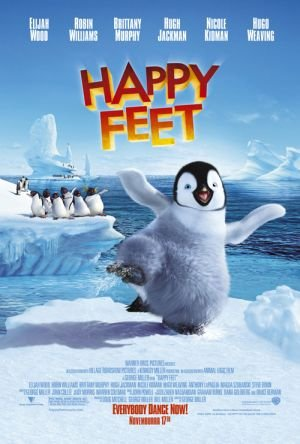
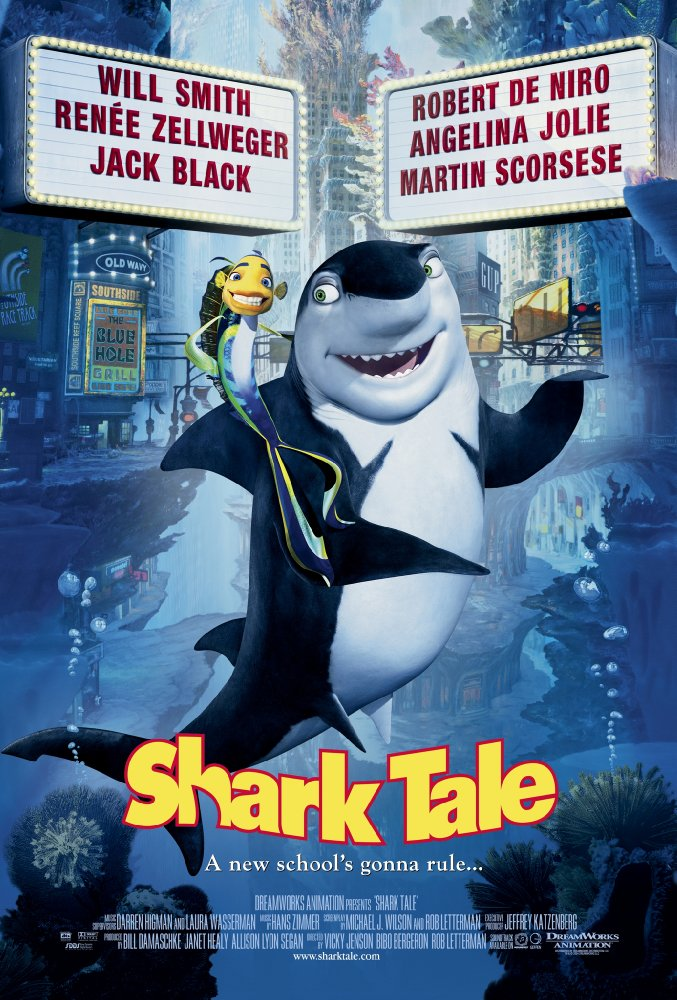
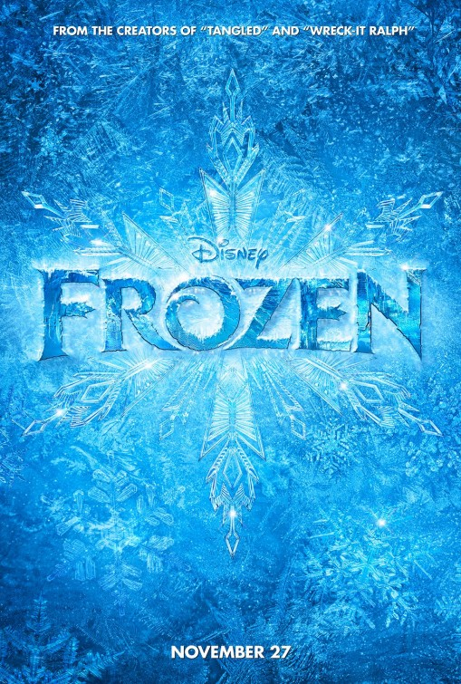
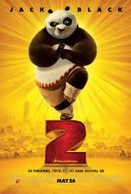
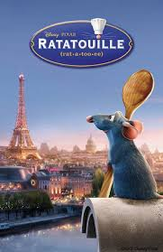

Finding Nemo
 StorylineA clown fish named Marlin lives in the Great Barrier Reef loses his son, Nemo. After he ventures into the open sea, despite his father's constant warnings about many of the ocean's dangers. Nemo is abducted by a boat and netted up and sent to a dentist's office in Sydney. So, while Marlin ventures off to try to retrieve Nemo, Marlin meets a fish named Dory, a blue tang suffering from short-term memory loss. The companions travel a great distance, encountering various dangerous sea creatures such as sharks, anglerfish and jellyfish, in order to rescue Nemo from the dentist's office, which is situated by Sydney Harbor. While the two are doing this, Nemo and the other sea animals in the dentist's fish tank plot a way to return to Sydney Harbor to live their lives free again.
StarringAlbert Brooks, Ellen DeGeneres, Alexander Gould
Happy Feet
 StorylineWhen Mumble is born into a colony of Emperor penguins, he finds himself unable to be accepted by all other penguins, lacking the ability to sing a heartsong - a mating song which all penguins can perform from an early age. He does however have a talent for tap dance which is derided by his peers and scorned by the penguin elders as displeasing to their deity. Mumble's gift of dance is blamed for the possible cause of their food shortage, which is in reality caused by nearby trawlers depleting local fish stocks. After being virtually outcast by his colony he goes in search of the humans in an attempt to reason and communicate with them
StarringElijah Wood, Brittany Murphy, Hugh Jackman
Shark Tale
 PlotThe sea underworld is shaken up when the son of the shark mob boss is found dead and a young fish named Oscar is found at the scene. Being a bottom feeder, Oscar takes advantage of the situation and makes himself look like he killed the finned mobster. Oscar soon comes to realize that his claim may have serious consequences
StarringWill Smith, Robert De Niro, Renée Zellweger
Zootopia
 Storyline
StorylineFrom the largest elephant to the smallest shrew, the city of Zootopia is a mammal metropolis where various animals live and thrive. When Judy Hopps becomes the first rabbit to join the police force, she quickly learns how tough it is to enforce the law. Determined to prove herself, Judy jumps at the opportunity to solve a mysterious case. Unfortunately, that means working with Nick Wilde, a wily fox who makes her job even harder.
StarringGinnifer Goodwin, Jason Bateman, Idris Elba
Frozen
 StorylineAnna, a fearless optimist, sets off on an epic journey - teaming up with rugged mountain man Kristoff and his loyal reindeer Sven - to find her sister Elsa, whose icy powers have trapped the kingdom of Arendelle in eternal winter. Encountering Everest-like conditions, mystical trolls and a hilarious snowman named Olaf, Anna and Kristoff battle the elements in a race to save the kingdom. From the outside Anna's sister, Elsa looks poised, regal and reserved, but in reality, she lives in fear as she wrestles with a mighty secret-she was born with the power to create ice and snow. It's a beautiful ability, but also extremely dangerous. Haunted by the moment her magic nearly killed her younger sister Anna, Elsa has isolated herself, spending every waking minute trying to suppress her growing powers. Her mounting emotions trigger the magic, accidentally setting off an eternal winter that she can't stop. She fears she's becoming a monster and that no one, not even her sister, can help her.
StarringKristen Bell, Idina Menzel, Jonathan Groff
Chicken Run
 Storyline
StorylineHaving been hopelessly repressed and facing eventual certain death at the chicken farm where they are held, Rocky the rooster and Ginger the chicken decide to rebel against the evil Mr. and Ms. Tweedy, the farm's owners. Rocky and Ginger lead their fellow chickens in a great escape from the murderous farmers and their farm of doom.
StarringMel Gibson, Julia Sawalha, Phil Daniels
Kung Fu Panda 2
 StorylineIn the Valley of Peace, Po Ping is revelling in his fulfilled dreams as he serves as the fabled Dragon Warrior protecting his home with his heroes now his closest friends. However, Po and company learn that the murderous Lord Shen of Gongman City is threatening the land with a fearsome new weapon that could mean the end of kung fu. They attempt to stop him, but the panda is burdened with crippling memory flashbacks linked to this villain. Now with China in the balance, Po must learn about his past and find true inner peace against all opposition.
StarringJack Black, Angelina Jolie, Jackie Chan
Ratatouille
 StorylineA rat named Remy dreams of becoming a great French chef despite his family's wishes and the obvious problem of being a rat in a decidedly rodent-phobic profession. When fate places Remy in the sewers of Paris, he finds himself ideally situated beneath a restaurant made famous by his culinary hero, Auguste Gusteau. Despite the apparent dangers of being an unlikely - and certainly unwanted - visitor in the kitchen of a fine French restaurant, Remy's passion for cooking soon sets into motion a hilarious and exciting rat race that turns the culinary world of Paris upside down.
StarringBrad Garrett, Lou Romano, Patton Oswalt